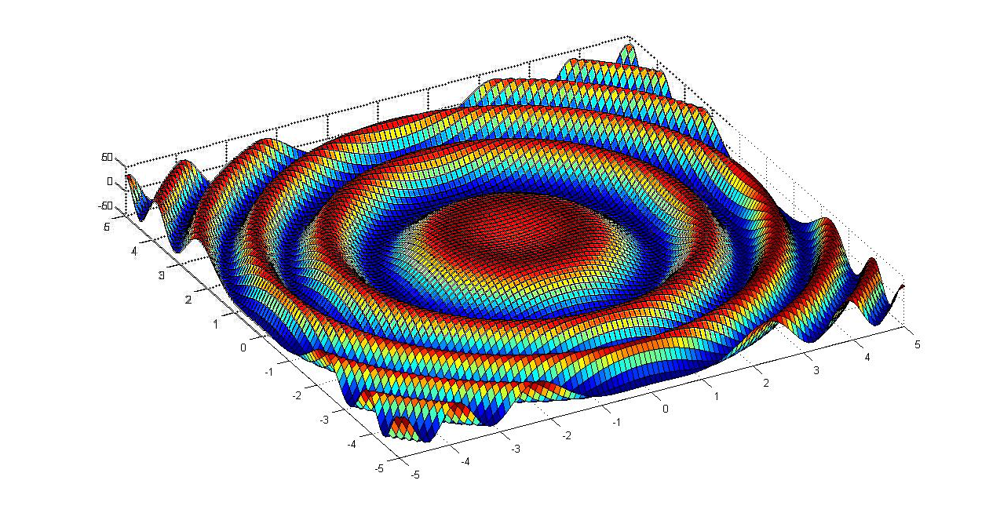

La simulation de l'eau
Pourquoi s'interreser à la simulation de l'eau?
Je parlerais ici de la simulation de liquide en informatique et plus précisément de l’eau puisque c’est évidement le liquide le plus fréquemment nécessaire à simuler que ce soit dans l’audiovisuel ou le jeux-vidéo,deux exemples plus précisément traiter ultérieurement.
Bien que la simulation d’un liquide puise paraître comme un sujet simple elle est en réalité extrêmement complexe et a nécessiter, au-delà des formule qui la permettent, des stratagème pour pouvoir la produire sur des machine très peux puissantes.
Pour expliquer la complexité de ce sujet et le vulgariser ce site est composer de quatre autres pages expliquant individuellement :- -le fonctionnement du système chaotique qu’est l’eau.
- -les formules utiliser au cinéma.
- -les techniques pour faire croire à de l’eau.
- -La transformation d’une onde en vague.
Pour ceux qui ne voudraient pas lire voici une vidéo qui vulgarise très bien tout ce qu'il y a à savoir et dont je me suis beaucoup inspiré.